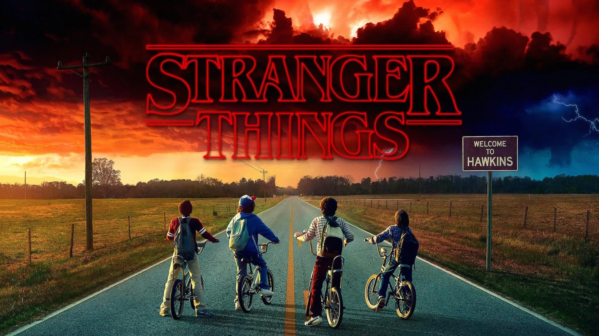

Geiser Guerrero
Estudiante - 4to Semestre Ing. en Sistemas
Mis Hobbies:
Ver Series - Peliculas Programación Gaming Escuchar MusicaMis Series Favoritas
Breaking Bad

Una serie sobre un profesor de química que se convierte en fabricante de metanfetaminas.
Game of Thrones

Una serie épica de fantasía basada en las novelas de George R.R. Martin.
Stranger Things
Una serie de ciencia ficción y terror ambientada en los años 80.
The Crown

Drama histórico sobre el reinado de la Reina Isabel II del Reino Unido y los eventos que definieron la segunda mitad del siglo XX.
Dark
Thriller de ciencia ficción alemán sobre viajes en el tiempo y secretos familiares que conectan cuatro generaciones.
The Mandalorian

Serie del universo Star Wars que sigue las aventuras de un cazarrecompensas mandaloriano en la galaxia exterior.
From

Desvela el misterio de un pueblo de pesadilla en el centro de América que atrapa a todos los que entran. Mientras los residentes involuntarios luchan por mantener una sensación de normalidad y buscan una salida, también deben sobrevivir a las amenazas del bosque circundante, incluidas las aterradoras criaturas que salen cuando se pone el sol.
Sherlock

Adaptación moderna de las historias de Sherlock Holmes ambientada en el Londres contemporáneo del siglo XXI.
The Witcher

Serie de fantasía épica basada en las novelas sobre Geralt de Rivia, un cazador de monstruos en un mundo medieval.
Peaky Blinders

Drama criminal ambientado en Birmingham post-Primera Guerra Mundial, siguiendo a la familia Shelby y su imperio criminal.
La casa de papel
Thriller español sobre un atraco perfectamente planificado a la Casa de la Moneda de España liderado por el Profesor.
Ozark

Drama sobre una familia que debe lavar dinero del cartel mexicano desde los remotos Ozarks de Missouri.
The Boys

Serie de superhéroes oscura que muestra el lado corrupto de los superhéroes corporativos y quienes luchan contra ellos.